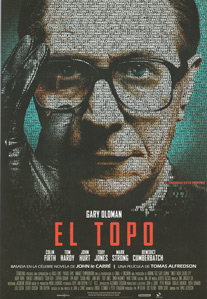

El topo
Octubre de 1973. Control, jefe del servicio de inteligencia británica, envía de forma extraoficial al agente Jim Prideaux a Budapest para contactar con un general húngaro que desea cambiar de bando y que tiene información sobre la identidad de un topo.
Pero su misión es un fracaso. Descubierto, le disparan, generándose una fuerte tensión internacional ante lo que Control y George Smiley, su hombre de confianza deben dejar sus cargos, muriendo el primero poco después.
Nombrado sucesor al frente del Circus, sede de los servicios secretos, Percy Alleline, su prioridad será lo que llaman operación "brujería", por la que tienen acceso, gracias a un agente doble soviético, a importante información de la Unión Soviética.
Pero las informaciones sobre la existencia de un topo llegan a Oliver Lacon, el subsecretario del que dependen los servicios de inteligencia por medio de Ricki Tarr, un agente del MI6 considerado un desertor, pero cuyas informaciones confirman las sospechas que Control había puesto ya en su conocimiento, por lo que decide recuperar los servicios de Smiley, pese a que ya no estaba en activo desde el escándalo de Hungría, esperando que pueda investigar el asunto desde fuera con la ayuda del joven Peter Guillam y de Mendel, otro agente jubilado.
Comenzarán sus investigaciones entrevistando a las personas que abandonaron el Circus al poco tiempo del cese de Control y Smiley.
Connie Sachs una de ellas les pone sobre la pista de Alexei Polyakov, agregado cultural de la embajada soviética, que ella asegura que es un espía de Karla, nombre dado al soviético encargado de entrenar a militares retirados para convertirlos en agentes infiltrados o "topos", ya que observó durante un desfile en Berlín cómo un oficial le saludaba militarmente. Pero sus jefes le quitaron importancia y la cesaron.
Tras hacerse con los pagos realizados con los denominados "fondos de reptiles", observa que, pese a haber muerto en Hungría, Jim Prideaux, recibió 1.000 libras dos meses después de aquel suceso, a nombre de Ellis.
Y con ese nombre Prideaux, trabaja como profesor en una escuela infantil.
Entretanto Tarr contacta con Smiley al que le explica que fue enviado a Estambul para tratar de convencer a Boris, un delegado comercial ruso de que desertara, dándose cuenta de que el ruso en realidad no interesaba, aunque mientras lo investigaba entró en contacto con Irina, la esposa de este de la que se hizo amante cuando trataba de consolarla tras ver que Boris la maltrataba.
Tras la aventura, Irina le confesó que sabía que era un agente secreto, al igual que ella, que le pidió que le pusiera en contacto con Control, pues poseía valiosa información sobre un agente doble y deseaba vivir una nueva vida en Occidente.
Tarr se puso en contacto con el Circus, aunque su respuesta se demoró y fue para negar la negociación y pedirle a él que regresara de inmediato.
Tras ello, y de pronto entran en acción los soviéticos que acaban con Boris y con el jefe de los servicios británicos en Estambul, llevándose a Irina rumbo a Odessa.
Acusado del asesinato del diplomático inglés, Tarr pasó a la clandestinidad.
Guillam, jefe inmediato de Tarr es llamado por Alleline que le acusa de proteger a un asesino y a un desertor, del que saben que recibió 30.000 libras, que ellos piensan que le entregaron los servicios secretos soviéticos.
Cuando va a ver a Smiley, encuentra allí a Tarr, al que golpea creyéndole un traidor, aunque Smiley no comparte su opinión, comprobando que en el libro registro que el propio Guillam robó falta la hoja relativa al día en que Tarr envió su informe.
Interrogan a Jerry Westerby, que recibió el teletipo en que avisaban de la muerte de Prideaux, haciéndose cargo de la situación ante la inacción de Control, Bill Haydon, otro de los dirigentes del Circus con el que Ann, la esposa de Smiley le fu infiel a este.
Finalmente Smiley encuentra a Prideaux, que le cuenta la teoría de Control sobre la existencia de un topo, tratando de saber cuál de los dirigentes de entre cinco era el topo: "Calderero" (Alleline), "Sastre" (Haydon), "Soldado" (Bland), y "Hombre pobre" (Esterhase), siendo Smiley el quinto.
Descubierto, fue torturado durante largo tiempo, acabando por confesarlo todo, cuando pensaba que ya todos habían huido, y tras ver cómo mataban delante de él a Irina, aunque los húngaros conocían ya la historia del topo y solo deseaban saber hasta dónde había llegado Control con sus informaciones.
Le liberaron y le llevaron a Inglaterra. Allí recibió la visita de Esterhase, otro dirigente del Circus que le dijo que estaba muerto como espía y le dio 1.000 libras.
Smiley le contará sus conclusiones al propio ministro, informándole que la fuente del proyecto "brujería", Polyakov, les da información muy relevante, pero no para atraer a los ingleses, sino a los americanos, que con esa supuestamente valiosa información accederían a colaborar y a compartir secretos con ellos, secretos que el topo haría llegar a la inteligencia soviética.
Con la amenaza de deportarlo a Hungría, su país, Smiley consigue amedrentar a Esterhase, el eslabón más débil de la cúpula del Circus, consiguiendo que este les informe de la dirección del piso donde intercambian información con Polyakov.
Envían tras ello a Tarr a la sede de los servicios secretos británicos en París, desde donde hace que envíen un teletipo al Circus en que este indica que conoce la identidad del topo.
Ante tal información, Calderero, Sastre y Soldado se reúnen en la sede del Circus, tal como Smiley esperaba.
Poco después el topo se reúne en el piso secreto con Polyakov, al que le indica que los servicios secretos soviéticos deben acabar con Tarr, cayendo así en la trampa tendida, comprobando que el traidor es Haydon.
Smiley lo interroga, confesándole a Haydon que sedujo a su esposa porque Karla sabía que Ann era el punto débil de Smiley, y que cegado por el engaño sería incapaz de ver en él algo más que al amante de su mujer y no investigaría su traición.
Le revela también que estaba al tanto de las sospechas de Control porque Prideaux le informó del objetivo de su viaje antes de ir a Budapest, y, aunque frustró su misión, logró salvarle la vida.
Y esto le costará la suya, pues mientras está prisionero a la espera de ser enviado a Moscú como parte de un intercambio de presos, Prideaux, conocedor de la traición que acabó con su carrera acaba con la vida de Haydon.
Resuelto el misterio, Smiley pasar a ocupar el cargo de jefe del servicio de inteligencia.